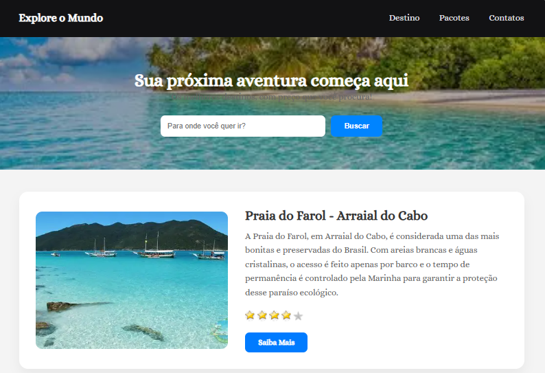
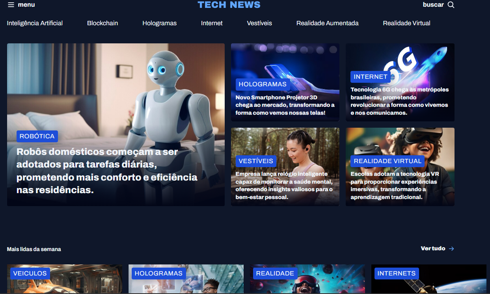

Este projeto é uma landing page focada na conversão e na experiência visual do usuário. O design foi pensado para transmitir tranquilidade e desejo de viagem, utilizando uma interface limpa (Clean UI) com alto contraste. Destaque para o uso de componentes reutilizáveis, como os cards de destinos que incluem sistema de avaliação e chamadas para ação (CTAs) estratégicas.
Visualizar
Tech News – Portal de Conteúdo Tecnológico Este projeto foca na construção de uma interface densa de informações para um portal de notícias futurista. O desafio principal foi aplicar CSS Grid para criar uma malha de notícias assimétrica e responsiva. Destaques técnicos: Implementação de interface Dark Mode com foco em acessibilidade e contraste. Organização de componentes complexos (Badges, Grids de destaque e Sidebar). Design voltado para a experiência de leitura e escaneabilidade de conteúdo (UI/UX).
Visualizar